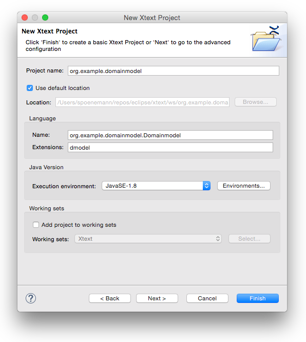
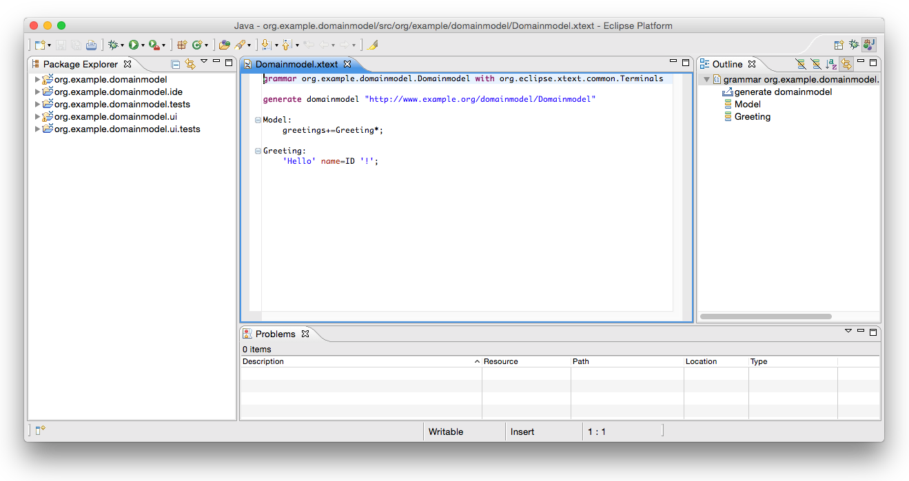
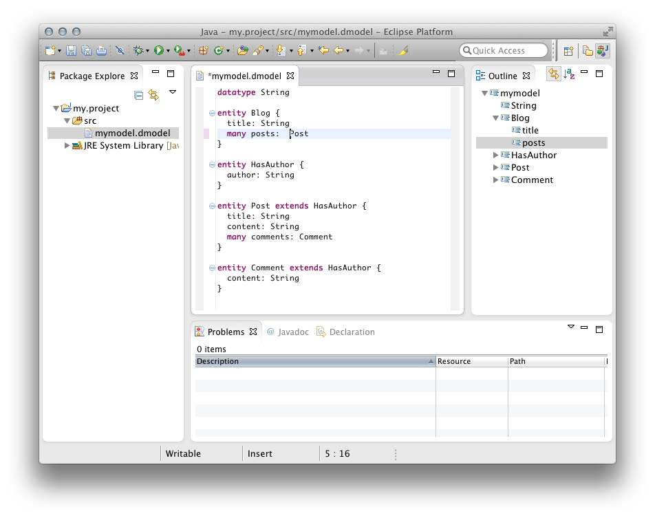
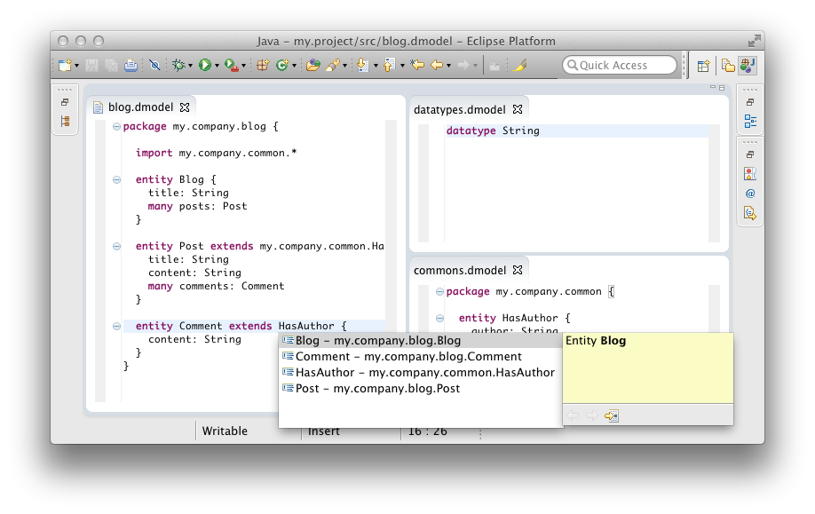

15分チュートリアル
このチュートリアルでは、Rails、GrailsやSpring Rooのように、エンティティとプロパティをモデル化するための小さなドメイン固有言語を実装します。この構文はとても示唆に富んでいます。
datatype String
entity Blog {
title: String
many posts: Post
}
entity HasAuthor {
author: String
}
entity Post extends HasAuthor {
title: String
content: String
many comments: Comment
}
entity Comment extends HasAuthor {
content: String
}
あなたのマシーンにXtextをインストールした後、Eclipseを起動し、新規workspaceをセットアップします。
新規Xtextプロジェクトの作成
まず初めに、Eclipseプロジェクトを作る必要があります。Eclipseウィザードから以下の操作を行います。
File → New → Project… → Xtext → Xtext project
意味のあるプロジェクト名、言語名、そしてファイル拡張子を選びます。例えば
| プロジェクト名: | org.example.domainmodel |
| 言語名: | org.example.domainmodel.Domainmodel |
| DSL-ファイル拡張子: | dmodel |
プロジェクトを作成するため Finish を押してください。

ウィザードを正常に終了した後、ワークスペースには5つの新しいプロジェクトが作成されます。
| org.example.domainmodel | 文法定義と全ての言語固有コンポーネント(パーサー、字句解析器、リンカー、バリデーションなど) |
| org.example.domainmodel.ide | プラットフォームに依存しないIDE機能 (例 コンテントアシスタントサービス) |
| org.example.domainmodel.tests | 言語のユニットテスト |
| org.example.domainmodel.ui | Eclipseエディターと、ワークベンチ関連機能 |
| org.example.domainmodel.ui.tests | Eclipseエディター用UIテスト |

文法を書く
エディターで 文法ファイルDomainmodel.xtext を開くと、ウィザードが自動的に開きます。文法ファイルにはシンプルな Hello World 文法が含まれています。
grammar org.example.domainmodel.Domainmodel with
org.eclipse.xtext.common.Terminals
generate domainmodel "http://www.example.org/domainmodel/Domainmodel"
Model:
greetings+=Greeting*;
Greeting:
'Hello' name=ID '!';
さっそく、文法定義をエンティティ言語で置き換えてみましょう。
grammar org.example.domainmodel.Domainmodel with
org.eclipse.xtext.common.Terminals
generate domainmodel "http://www.example.org/domainmodel/Domainmodel"
Domainmodel:
(elements+=Type)*;
Type:
DataType | Entity;
DataType:
'datatype' name=ID;
Entity:
'entity' name=ID ('extends' superType=[Entity])? '{'
(features+=Feature)*
'}';
Feature:
(many?='many')? name=ID ':' type=[Type];
文法ルールの意味を詳しく見ていきましょう。
-
文法の最初のルールは常にスタートルールとして使用されます。
Domainmodel: (elements+=Type)*;これは、Domainmodel が任意の数のTypeを持ち、それらを
elementsと呼ばれる特性に追加 (+=) することを表しています。 -
Type ルールはDataType ルール もしくは (
|) Entity ルールに委任します。Type: DataType | Entity; -
DataType ルールは
'datatype'キーワードから始まり、ID と呼ばれるルールによってパースされる識別子が続きます。ID ルールは上位文法 org.eclipse.xtext.common.Terminals で定義され、一つの単語(識別子)をパースします。 ルールの呼び出し箇所で F3 を押すことで、宣言箇所にジャンプできます。ID の戻り値は 特性nameに割り当てられます(=)。DataType: 'datatype' name=ID; -
Entity ルールもキーワードの定義から始まり、次に名前が続きます。
Entity : 'entity' name=ID ('extends' superType=[Entity])? '{' (features+=Feature)* '}';次に かっこで囲まれたオプション (
?) のextends句があります。 特性superTypeは クロスリファレンス ( 角かっこに注意 )なので、 パーサールール Entity はここでは呼び出されず、一つの識別子だけが (ID ルール) がパースされます。superTypeで参照する実際の Entity 割り付けは、リンクフェーズにて解決されます。 最後に、 中かっこの中には、次のルールで呼び出される任意の数の Feature を含めることができます。 -
最後に、 Feature ルール定義は次のとおり:
Feature: (many?='many')? name=ID ':' type=[Type];manyキーワードは、複数の値を持つ特性をモデル化するのに使われます。 代入演算子 (?=) は、manyの型が booleanであることを意味しています。 その他のパーサールールは既知のものです。
このエンティティ文法はすでにXtextの文法言語の最も重要な概念を使用しています。 キーワードは文字列リテラルとして記述され、単純な割り当てではイコール (=) が用いられるが、複数値の割り付けにはプラスイコール (+=) が用いられます。 また、真偽値の割り当て符号 (?=) についても確認しました。 さらに、この例では様々な構文要素 (? = オプション, * = 任意の数, + = 少なくとも1つ) を含んでおり、さらにクロスリファレンスのデモを示しています。 詳細は、文法言語リファレンス を参照してください。 では、これらの言語記述で何ができるのかを見ていきましょう。
言語アーティファクトの生成
文法の準備が整ったので、様々な言語要素を得るためコード生成を実行する必要があります。コード生成のためには、文法エディター上で右クリックし以下を選択します。
Run As → Generate Xtext Artifacts.
この操作によって、パーサー、テキストエディターといくつかの追加のインフラストラクチャコードが生成され、これはらコンソールビューのログメッセージで確認することができます。

生成されたEclipseプラグインの実行
Eclipse IDE統合の準備ができました。パッケージエクスプローラのプロジェクト org.example.domainmodel を右クリックし、Run As → Eclipse Applicationを選択すると、新規run configurationが生成され、新たな言語プラグインが組み込まれた2つ目のEclipseインスタンスが表示されます。表示されたEclipseインスタンスにてFile → New → Project… → Java Projectを実行し、新規プロジェクトを作成します。その後、拡張子が (*.dmodel) から始まるファイルを作成すると、生成したエンティティエディターが開きます。では、コード補間、シンタックスハイライト、構文チェック、リンクエラー、フォーマッティング、(クイック)アウトラインビュー、ハイパーリンキング、参照の発見、折り畳み、リネームリファクタリングなどの標準機能を確認しましょう。

第2イテレーション: パッケージの追加とインポート
最初のDSLを生成しエディターの表示を確認したので、言語の改良、機能追加をしていきましょう。domainmodel言語は名前の衝突を避けることとJavaとの親和性を高めるためにPackagesの概念をサポートする必要があります。Package は Types と他のパッケージを含みます。さらに名前による参照を実現するため、imports宣言も追加します。
最後に、これまで使っていたモデルを異なるファイルに分割します。
// datatypes.dmodel
datatype String
// commons.dmodel
package my.company.common {
entity HasAuthor {
author: String
}
}
// blogs.dmodel
package my.company.blog {
import my.company.common.*
entity Blog {
title: String
many posts: Post
}
entity Post extends my.company.common.HasAuthor {
title: String
content: String
many comments: Comment
}
entity Comment extends HasAuthor {
content: String
}
}
文法を改良しましょう。
-
Domainmodel は型とパッケージは含まれているので、エントリールールを変更する必要があります。さらに、PackageDeclarations と Types に対する上位の共通型(AbstractElement)も導入する必要があります。
Domainmodel: (elements+=AbstractElement)*; AbstractElement: PackageDeclaration | Type; -
PackageDeclarationは期待通りに見えます。これは、複数の Imports と AbstractElements を含みます。Imports もまたルートドメインモデルに含まれる必要があるため、AbstractElementのルールに追加します。PackageDeclaration: 'package' name=QualifiedName '{' (elements+=AbstractElement)* '}'; AbstractElement: PackageDeclaration | Type | Import; QualifiedName: ID ('.' ID)*;QualifiedNameは少し特殊で、割り当てが含まれません。したがって、これは文字列を返すデータタイプルールを提供します。よって、 Packageのname特性はString型のままです。 -
ImportsはXtextによってとても簡単に定義することができます。パーサールールで
importedNamespaceという名前を用いると、フレームワークはimportとして処理します。これはワイルドカードもサポートしています。Import: 'import' importedNamespace=QualifiedNameWithWildcard; QualifiedNameWithWildcard: QualifiedName '.*'?;QualifiedNameと同様に、QualifiedNameWithWildcardもまたもプレーン文字列を返します。 -
最後のステップでは、完全修飾名をクロスリファレンスでも使用できるようにします。これがないと、importを常に記載しないとエンティティの参照ができなくなります。
Entity: 'entity' name=ID ('extends' superType=[Entity|QualifiedName])? '{' (features+=Feature)* '}'; Feature: (many?='many')? name=ID ':' type=[Type|QualifiedName];(
|)はクロスリファレンスの対象ではなく、パースされた文字列の構文を指定するために用いられることに注意してください。
文法は以上です。最終的に以下のようになります。
grammar org.example.domainmodel.Domainmodel with
org.eclipse.xtext.common.Terminals
generate domainmodel "http://www.example.org/domainmodel/Domainmodel"
Domainmodel:
(elements+=AbstractElement)*;
PackageDeclaration:
'package' name=QualifiedName '{'
(elements+=AbstractElement)*
'}';
AbstractElement:
PackageDeclaration | Type | Import;
QualifiedName:
ID ('.' ID)*;
Import:
'import' importedNamespace=QualifiedNameWithWildcard;
QualifiedNameWithWildcard:
QualifiedName '.*'?;
Type:
DataType | Entity;
DataType:
'datatype' name=ID;
Entity:
'entity' name=ID ('extends' superType=[Entity|QualifiedName])? '{'
(features+=Feature)*
'}';
Feature:
(many?='many')? name=ID ':' type=[Type|QualifiedName];
上記の変更をエディターに反映させるためには、前のセクションで紹介した言語インフラストラクチャの生成を再度行う必要があります。また、モデルを小さなパーツに分割し、ファイルの境界を越えてクロスリファレンスすることも可能です。
